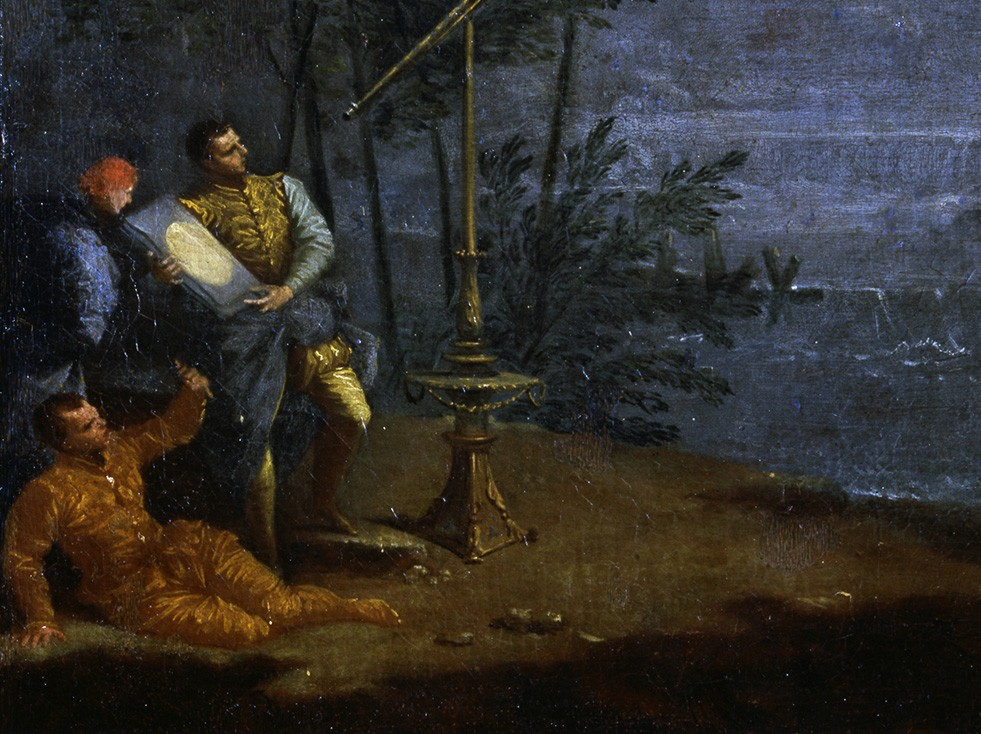
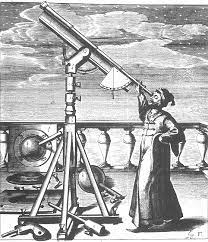
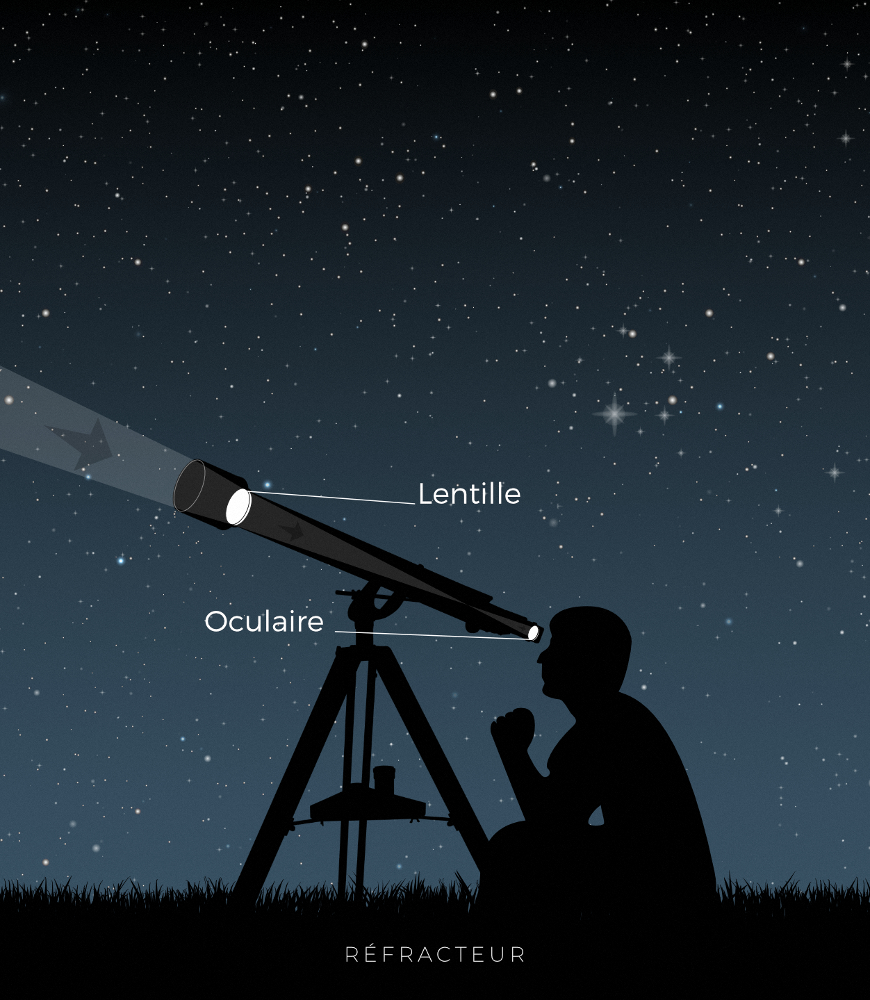
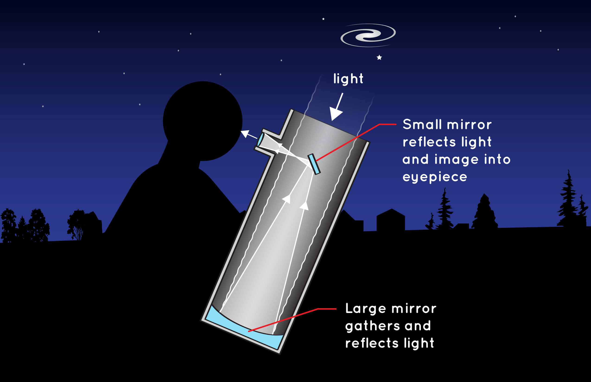
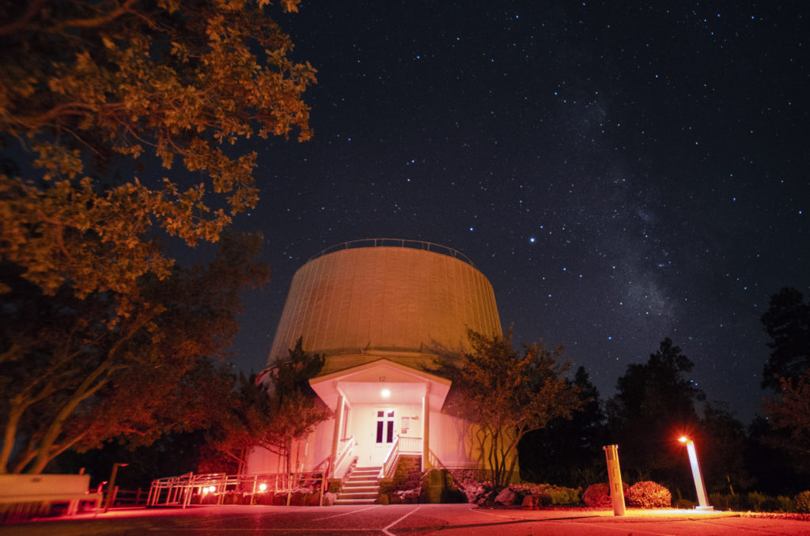
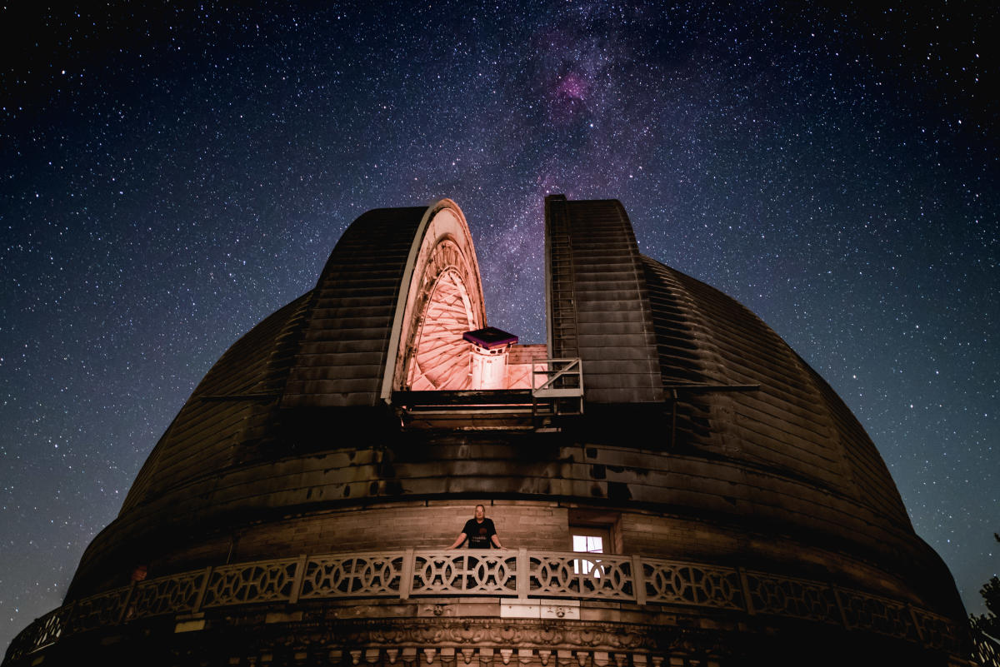

Depuis l'antiquité, hommes, femmes et enfants ont regardé le ciel
avec ses yeux nus tout en se demandant sur ce que ce sont ses
choses que l'on pouvait voir .Depuis longtemps, la lune, le soleil
ont été des choses mystérieuses pourrait être vus de jour comme de
nuit, mais, les étoiles les plannètes étaient plus encore
mystérieux et étranges, eventuellement parce qu'elles sont si loin
au point qu'ils ne pouvaient être vues que comme des points
lumineux. La seule chose que les ancients obsevateurs pouvaient
compter sur, pour en savoir plus sur l'espace, était leurs yeux
nus et leur imagination, et c'est ainsi que
L'astronomie observationnelle était née, et ainsi les outils d'observations ont été développés jour après jour, siècle après autre, jusqu'au dévloppement et
invention des telescopes, construction d'observatoires et
finnalement, la découverte de l'espace à travers les observations
faites, tout au long l'histoire d'astronomie jusqu'à nos jours .
Telescope
Histoire

Le télescope est un instrument optique qui a été inventé et dévloppé pour pouvoir observer les objets éloignés comme le montre son nom d'origine grec ( (tele) signifiant « loin » et (skopein) signifiant « regarder, voir ») , en fait l'invention et la fabrication des propriétes des lentilles étaient connus depuis l'époque des Grecs, et une série de scientifiques islamiques, en particulier Al-Kindi (c. 801-873), Ibn Sahl (c. 940-1000) et Ibn al-Haytham (965-1040), ont apporté d'importantes contributions à l'étude de l'optique,mais, même si les outils étaient déjà disponibles, l'invention du telecope a dû attendre pour des raisons inconnues .
Actuellemlent l'histoire la plus connue est raconté c'est celle que, la première apparition du téléscope était avant l'invention du premier téléscope connu , qui est apparu en 1608 aux Pays-Bas, lorsqu'un brevet a éte déposé par Hans Lip-pershey, un fabricant des lunettes Hollandais, le gouvernement national de La Haye a discuté d'une demande de brevet pour un appareil qui aidait à "voir des choses éloignées comme si elles étaient proches". C'était une lentille convexe et concave dans un tube. La combinaison agrandissait les objets trois ou quatre fois. Le gouvernement a trouvé l'appareil trop facile à copier et n'a pas accordé de brevet, mais a voté une petite récompense pour Jacob Metius et a employé Hans Lip-pershey pour fabriquer plusieurs versions de jumelles, pour lesquelles il était bien payé.
La nouvelle de l'invention du télescope se répandit rapidement à travers l'Europe. En avril 1609, les lunettes à trois puissances pouvaient être achetées dans les magasins de lunetiers du Pont Neuf à Paris, et quatre mois plus tard, il y en avait plusieurs en Italie. Ils ont été rendus célèbres par un professeur et expérimentateur italien nommé Galileo Galilei à l'été 1609 à l'Université de Padoue.
Le premier télescope de Galileo était essentiellement un tube contenant deux lentilles. Sa première tentative était un instrument à trois puissances; cela a été suivi par un qui grossissait les objets environ neuf fois. Il a montré ce dernier appareil au sénat vénitien, dans l'espoir de les impressionner par son potentiel commercial et militaire.
Les observations avec le télescope de Galileo ont renforcé la nouvelle idée que la Terre et les planètes tournaient autour du Soleil. Il a également révélé des multitudes d'étoiles dans la Voie lactée et ailleurs. On semblait voir non pas une sphère fixe d'étoiles, mais un univers d'étoiles s'étendant vers l'extérieur à une certaine distance vaste et inconnue, peut-être à l'infini.
Et c'est ainsi que le télescope a été inventé pour la première fois, mais son parcours de développement s'est poursuivi tout au long de les âges et tant de type sont nés et évolués chacun pour un rôle spécifique, dont on va citer les plus princcipaux.
Types
Le réfracteur

Un télescope réfracteur (également appelé réfracteur) est un type de télescope optique qui utilise une lentille comme objectif pour former une image (également appelé télescope dioptrique). La conception du télescope réfracteur était à l'origine utilisée dans les lunettes d'espionnage et les télescopes astronomiques, mais est également utilisée pour les objectifs d'appareil photo à longue focale. Bien que les grands télescopes réfracteurs aient été très populaires dans la seconde moitié du XIXe siècle, pour la plupart des recherches, le télescope réfracteur a été remplacé par le télescope à réflexion, qui permet de plus grandes ouvertures. Le grossissement d'un réfracteur est calculé en divisant la distance focale de l'objectif par celle de l'oculaire.[1]
Les télescopes réfracteurs ont généralement une lentille à l'avant, puis un long tube, puis un oculaire ou une instrumentation à l'arrière, où la vue du télescope se concentre. À l'origine, les télescopes avaient un objectif à un élément, mais un siècle plus tard, des lentilles à deux et même trois éléments ont été fabriquées.
La lunette astronomique est une technologie qui a souvent été appliquée à d'autres appareils optiques, tels que les jumelles et les zooms/téléobjectifs/objectifs à focale longue.
Le réflecteur

Un télescope à réflexion (également appelé réflecteur) est un télescope qui utilise un seul ou une combinaison de miroirs incurvés qui réfléchissent la lumière et forment une image. Le télescope à réflexion a été inventé au 17ème siècle par Isaac Newton comme alternative au télescope réfracteur qui, à l'époque, était une conception qui souffrait de graves aberrations chromatiques. Bien que les télescopes à réflexion produisent d'autres types d'aberrations optiques, c'est une conception qui permet des objectifs de très grand diamètre. Presque tous les principaux télescopes utilisés dans la recherche en astronomie sont des réflecteurs. De nombreuses variantes de formes sont utilisées et certaines utilisent des éléments optiques supplémentaires pour améliorer la qualité de l'image ou placer l'image dans une position mécaniquement avantageuse. Étant donné que les télescopes à réflexion utilisent des miroirs, la conception est parfois appelée télescope catoptrique.
De l'époque de Newton aux années 1800, le miroir lui-même était en métal - généralement en métal spéculum. Ce type comprenait les premières conceptions de Newton et même les plus grands télescopes du 19ème siècle, le Léviathan de Parsonstown avec un miroir métallique de 1,8 mètre de large. Au 19ème siècle, une nouvelle méthode utilisant un bloc de verre recouvert d'une très fine couche d'argent a commencé à devenir plus populaire au tournant du siècle. Télescopes communs qui ont conduit aux télescopes à réflexion Crossley et Harvard, qui ont contribué à établir une meilleure réputation pour les télescopes à réflexion, car les conceptions de miroirs métalliques étaient réputées pour leurs inconvénients. Principalement, les miroirs métalliques ne reflétaient qu'environ 2⁄3 de la lumière et le métal se ternirait. Après de multiples polissages et ternissements, le miroir pourrait perdre son figuration précise nécessaire.
Les télescopes à réflexion sont devenus extrêmement populaires pour l'astronomie et de nombreux télescopes célèbres, tels que le télescope spatial Hubble, et des modèles amateurs populaires utilisent cette conception. De plus, le principe du télescope à réflexion a été appliqué à d'autres longueurs d'onde électromagnétiques, et par exemple, les télescopes à rayons X utilisent également le principe de réflexion pour fabriquer des optiques de formation d'image.
Les catadioptriques
Les télescopes catadioptriques sont des télescopes optiques qui combinent des miroirs et des lentilles de forme spécifique pour former une image. Ceci est généralement fait pour que le télescope puisse avoir un degré global de correction d'erreur plus élevé que ses homologues tout objectif ou tout miroir, avec un champ de vision sans aberration par conséquent plus large. Leurs conceptions peuvent avoir de simples surfaces entièrement sphériques et peuvent tirer parti d'un chemin optique plié qui réduit la masse du télescope, ce qui les rend plus faciles à fabriquer. De nombreux types utilisent des «correcteurs», une lentille ou un miroir incurvé dans un système optique de formation d'image combiné afin que l'élément réfléchissant ou réfringent puisse corriger les aberrations produites par son homologue.
Et maintenant que nous avons mentionné les 3 types principaux, vous devez sûrement se demander; eh bien mais où sont les autres types? Le Dobsonien, le Shmidt-Cassegrain, le Maksutov-Cassegrain et beaucout plus d'autres.. ; En fait, ce ne sont tout que des sous-types de l'un de ces trois cités précédemment, alors ne soyez pas confus.Mais pourquoi il y' en a tellement plusieurs types?
Eventuellement, chaque type est designé pour un type de lumière spécifique c'est pour cela qu'on trouve les gamma rays....
Listes
Telescope à rayons gamma
télescope à rayons gamma, instrument conçu pour détecter et résoudre les rayons gamma provenant de sources extérieures à l'atmosphère terrestre.
Les rayons gamma sont les ondes les plus courtes (environ 0,1 angström ou moins) et ont donc l'énergie la plus élevée du spectre électromagnétique. Étant donné que les rayons gamma ont tellement d'énergie, ils traversent le miroir d'un télescope optique standard. Au lieu de cela, les rayons gamma sont détectés par les flashs optiques qu'ils produisent lorsqu'ils interagissent avec le matériau dans un instrument spécialement conçu, tel qu'un détecteur à scintillation. L'atmosphère terrestre bloque la plupart des rayons gamma, de sorte que la plupart des télescopes à rayons gamma sont transportés sur des satellites et des ballons. Cependant, certains télescopes au sol peuvent observer le rayonnement Cherenkov produit lorsqu'un rayon gamma frappe la haute atmosphère terrestre.
Le premier télescope à rayons gamma a été transporté à bord du satellite américain Explorer 11 en 1961. Dans les années 1960, les satellites de défense Vela conçus pour détecter les rayons gamma provenant d'essais nucléaires clandestins ont découvert par hasard des sursauts gamma énigmatiques provenant de l'espace lointain. Dans les années 1970, les observatoires en orbite autour de la Terre ont trouvé un certain nombre de sources ponctuelles de rayons gamma, dont une exceptionnellement puissante appelée Geminga qui a ensuite été identifiée comme un pulsar à proximité. Le Compton Gamma Ray Observatory, lancé en 1991, a cartographié des milliers de sources de rayons gamma célestes. Il a également montré que les explosions mystérieuses sont réparties dans le ciel, ce qui implique que leurs sources se trouvent aux confins de l'univers plutôt que dans la Voie lactée. Le télescope spatial Fermi Gamma-ray, lancé en 2008, a découvert des pulsars qui n'émettaient que des rayons gamma
Telescope à rayons X
Un télescope à rayons X (XRT) est un télescope conçu pour observer des objets distants dans le spectre des rayons X. Pour s'élever au-dessus de l'atmosphère terrestre, qui est opaque aux rayons X, les télescopes à rayons X doivent être montés sur des fusées, des ballons ou des satellites artificiels à haute altitude.
Les éléments de base du télescope sont l'optique (focalisation ou collimation), qui collecte le rayonnement entrant dans le télescope, et le détecteur, sur lequel le rayonnement est collecté et mesuré. Une variété de conceptions et de technologies différentes ont été utilisées pour ces éléments.
De nombreux télescopes existants sur satellites sont composés de multiples copies ou variantes d'un système détecteur-télescope, dont les capacités s'ajoutent ou se complètent, et d'éléments supplémentaires fixes ou amovibles[1][2] (filtres, spectromètres) qui ajoutent des fonctionnalités au instrument.
Telescope à rayons X
L'astronomie ultraviolette est l'observation du rayonnement électromagnétique à des longueurs d'onde ultraviolettes comprises entre environ 10 et 320 nanomètres ; les longueurs d'onde plus courtes - les photons d'énergie plus élevée - sont étudiées par l'astronomie des rayons X et l'astronomie des rayons gamma.[1] La lumière ultraviolette n'est pas visible à l'œil humain. La plupart de la lumière à ces longueurs d'onde est absorbée par l'atmosphère terrestre, de sorte que les observations à ces longueurs d'onde doivent être effectuées depuis la haute atmosphère ou depuis l'espace.
Les mesures du spectre des raies ultraviolettes (spectroscopie) sont utilisées pour discerner la composition chimique, les densités et les températures du milieu interstellaire, ainsi que la température et la composition des jeunes étoiles chaudes. Les observations UV peuvent également fournir des informations essentielles sur l'évolution des galaxies. Ils peuvent être utilisés pour discerner la présence d'une naine blanche chaude ou d'un compagnon de séquence principale en orbite autour d'une étoile plus froide.
L'univers ultraviolet est assez différent des étoiles et des galaxies familières vues en lumière visible. La plupart des étoiles sont en fait des objets relativement froids émettant une grande partie de leur rayonnement électromagnétique dans la partie visible ou proche infrarouge du spectre. Le rayonnement ultraviolet est la signature d'objets plus chauds, généralement dans les premiers et derniers stades de leur évolution. Dans le ciel de la Terre vu en lumière ultraviolette, la plupart des étoiles s'estomperaient. Certaines étoiles massives très jeunes et certaines étoiles et galaxies très anciennes, devenant plus chaudes et produisant un rayonnement de plus haute énergie près de leur naissance ou de leur mort, seraient visibles. Des nuages de gaz et de poussière bloqueraient la vision dans de nombreuses directions le long de la Voie lactée.
Observatoires
Un observatoire est un lieu utilisé pour observer des événements terrestres, marins ou célestes. L'astronomie, la climatologie/météorologie, la géophysique, l'océanographie et la volcanologie sont des exemples de disciplines pour lesquelles des observatoires ont été construits. Historiquement, les observatoires étaient aussi simples que de contenir un sextant astronomique (pour mesurer la distance entre les étoiles) ou Stonehenge (qui a quelques alignements sur les phénomènes astronomiques).
Un observatoire astronomique, toute structure contenant des télescopes et des instruments auxiliaires permettant d'observer des objets célestes. Les observatoires peuvent être classés en fonction de la partie du spectre électromagnétique dans laquelle ils sont conçus pour observer. Le plus grand nombre d'observatoires sont optiques ; c'est-à-dire qu'ils sont équipés pour observer dans et à proximité de la région du spectre visible à l'œil humain. Certains autres observatoires sont instrumentés pour détecter les émetteurs cosmiques d'ondes radio, tandis que d'autres encore, appelés observatoires satellites, sont des satellites terrestres qui transportent des télescopes et des détecteurs spéciaux pour étudier les sources célestes de formes de rayonnement à haute énergie telles que les rayons gamma et les rayons X d'en haut. l'atmosphère.
Observatoire Terrestre
La plupart des télescopes utilisés par les astronomes sont sur Terre. Nous appelons ces télescopes au sol. Il est beaucoup plus facile et moins coûteux de construire un télescope sur Terre que dans l'espace. Il est également beaucoup plus facile de réparer si les choses tournent mal. Cependant, il y a aussi des inconvénients. Un télescope au sol doit regarder à travers l'atmosphère terrestre pour voir dans l'espace. C'est un problème car l'atmosphère peut brouiller nos images.
MKO Mauna Kea
 Les observatoires du Mauna Kea (MKO) sont un groupe d'installations de recherche astronomique indépendantes et de grands observatoires de télescopes situés au sommet du Mauna Kea sur la grande île d'Hawaï, aux États-Unis. Les installations sont situées dans une zone d'utilisation spéciale des terres de 525 acres (212 ha) connue sous le nom de «zone d'astronomie», qui est située dans la réserve scientifique du Mauna Kea de 11 228 acres (4 544 ha). L'enceinte d'astronomie a été créée en 1967 et est située sur des terres protégées par la loi sur la préservation historique en raison de son importance pour la culture hawaïenne. La présence et la poursuite de la construction de télescopes sont très controversées en raison de la centralité du Mauna Kea dans la religion et la culture hawaïennes indigènes, ainsi que pour diverses raisons environnementales.
Les observatoires du Mauna Kea (MKO) sont un groupe d'installations de recherche astronomique indépendantes et de grands observatoires de télescopes situés au sommet du Mauna Kea sur la grande île d'Hawaï, aux États-Unis. Les installations sont situées dans une zone d'utilisation spéciale des terres de 525 acres (212 ha) connue sous le nom de «zone d'astronomie», qui est située dans la réserve scientifique du Mauna Kea de 11 228 acres (4 544 ha). L'enceinte d'astronomie a été créée en 1967 et est située sur des terres protégées par la loi sur la préservation historique en raison de son importance pour la culture hawaïenne. La présence et la poursuite de la construction de télescopes sont très controversées en raison de la centralité du Mauna Kea dans la religion et la culture hawaïennes indigènes, ainsi que pour diverses raisons environnementales.
L'emplacement est presque idéal en raison de son ciel sombre dû au manque de pollution lumineuse, à sa bonne vision astronomique, à sa faible humidité, à sa haute altitude de 4 205 mètres (13 796 pieds), à sa position au-dessus de la majeure partie de la vapeur d'eau dans l'atmosphère, à son air pur, à son beau temps et emplacement à basse latitude.
La réserve a été créée en 1968 et est louée par le Département des terres et des ressources naturelles (DLNR) de l'État d'Hawaï.[23] L'Université d'Hawaï gère le site[23] et loue des terrains à plusieurs installations multinationales, qui ont investi plus de 2 milliards de dollars dans la science et la technologie.[1] Le bail expire en 2033 et après cela, 40 des 45 kilomètres carrés (25 des 28 milles carrés) reviennent à l'État d'Hawaï. Actuellement, des pressions sont exercées sur la direction de l'université. Les habitants n'ont jamais accepté treize télescopes au sommet de la montagne et exigent leur mot à dire dans le processus législatif. House Bill 2024 fait pression pour une nouvelle intendance au sommet. La zone sera intégrée en termes de gestion.[24] Certaines terres seront sous la juridiction de la communauté locale. Le projet de loi fait pression pour les futures lois et réglementations en matière de construction neuve. Comme toujours, les sites culturels et environnementaux seront fortement reconnus comme un facteur à prendre en compte.
University of Tokyo ATAKAMA
 L'observatoire d'Atacama de l'Université de Tokyo (TAO) est un observatoire astronomique situé au sommet du Cerro Chajnantor, à une altitude de 5 640 m (18 500 pieds) dans un dôme de lave dans le désert d'Atacama au nord du Chili.[1] Le site est situé à moins de 5 km (3,1 mi) au nord-nord-est de l'observatoire de Llano de Chajnantor, où se trouve l'Atacama Large Millimeter Array (ALMA), mais est à plus de 580 m (1 900 pieds) plus haut en altitude.
L'observatoire d'Atacama de l'Université de Tokyo (TAO) est un observatoire astronomique situé au sommet du Cerro Chajnantor, à une altitude de 5 640 m (18 500 pieds) dans un dôme de lave dans le désert d'Atacama au nord du Chili.[1] Le site est situé à moins de 5 km (3,1 mi) au nord-nord-est de l'observatoire de Llano de Chajnantor, où se trouve l'Atacama Large Millimeter Array (ALMA), mais est à plus de 580 m (1 900 pieds) plus haut en altitude.
L'objectif final du projet est de construire le télescope TAO (ou télescope TAO 6,5 m), un télescope optique-infrarouge de 6,5 m (260 pouces) sur le site.[2] Une première étape vers cet objectif a été la construction et l'installation d'un télescope pilote de 1,0 m (39 pouces), appelé miniTAO, achevé en 2009. Avec la première lumière réalisée en mars 2009 dans la région visible et en juin 2009 pour la région infrarouge. , l'observatoire est devenu le plus haut observatoire astronomique permanent du monde. La haute altitude de l'observatoire est essentielle pour sa mission, car il s'agit d'un observatoire de lumière infrarouge, et la lumière infrarouge est absorbée par la vapeur d'eau dans l'atmosphère, ce qui rend impératif qu'un observatoire infrarouge soit situé à haute altitude où l'atmosphère est clairsemée.
ARECIBO
 L'Observatoire d'Arecibo, également connu sous le nom de Centre national d'astronomie et d'ionosphère (NAIC) et anciennement connu sous le nom d'Observatoire d'ionosphère d'Arecibo, est un observatoire situé à Barrio Esperanza, Arecibo, Porto Rico, propriété de la US National Science Foundation (NSF).
L'Observatoire d'Arecibo, également connu sous le nom de Centre national d'astronomie et d'ionosphère (NAIC) et anciennement connu sous le nom d'Observatoire d'ionosphère d'Arecibo, est un observatoire situé à Barrio Esperanza, Arecibo, Porto Rico, propriété de la US National Science Foundation (NSF).
L'instrument principal de l'observatoire était le télescope Arecibo , une parabole à réflecteur sphérique de 305 m (1000 pieds) intégrée dans un gouffre naturel, avec un récepteur orientable monté sur câble et plusieurs émetteurs radar pour émettre des signaux montés à 150 m (492 pieds) au-dessus de la parabole. Achevé en 1963, il a été le plus grand télescope à ouverture unique au monde pendant 53 ans, dépassé en juillet 2016 par le télescope sphérique à ouverture de cinq cents mètres (FAST) en Chine. Suite à deux ruptures de câbles supportant la plate-forme du récepteur à la mi-2020, la NSF a mis le télescope hors service. Un effondrement partiel du télescope s'est produit le 1er décembre 2020, avant qu'une démolition contrôlée ne puisse être effectuée. En 2022, la NSF a annoncé que le télescope ne serait pas reconstruit, avec un établissement d'enseignement à établir sur le site.
L'observatoire comprend également un radiotélescope plus petit, une installation LIDAR et un centre d'accueil, qui restent opérationnels après l'effondrement du télescope.[3][4] L'astéroïde 4337 Arecibo porte le nom de l'observatoire de Steven J. Ostro, en reconnaissance des contributions de l'observatoire à la caractérisation des corps du système solaire.
LOWELL
L'observatoire Lowell est un observatoire astronomique situé à Flagstaff, en Arizona, aux États-Unis. L'observatoire Lowell a été créé en 1894, le plaçant parmi les plus anciens observatoires des États-Unis, et a été désigné monument historique national en 1965.[2][3] En 2011, l'Observatoire a été nommé l'un des "100 lieux les plus importants du monde" par Time Magazine.[4] C'est à l'observatoire Lowell que la planète naine Pluton a été découverte en 1930 par Clyde Tombaugh.

L'observatoire a été fondé par l'astronome Percival Lowell de la famille Lowell de Boston et est supervisé par un seul administrateur, un poste historiquement transmis par la famille. Le premier administrateur était le troisième cousin de Lowell, Guy Lowell (1916–1927). Le neveu de Percival, Roger Putnam, a servi de 1927 à 1967, suivi du fils de Roger, Michael (1967–1987), du frère de Michael, William Lowell Putnam III (1987–2013), et de l'actuel administrateur W. Lowell Putnam.
L'observatoire exploite plusieurs télescopes à trois endroits dans la région de Flagstaff. L'installation principale, située sur Mars Hill, juste à l'ouest du centre-ville de Flagstaff, abrite le télescope réfractaire Clark original de 61 centimètres (24 pouces), qui est maintenant utilisé pour l'éducation du public, avec 85 000 visiteurs annuels. Le télescope, construit en 1896 pour 20 000 $, a été assemblé à Boston par Alvan Clark & Sons, puis expédié par train à Flagstaff. Également situé sur le campus de Mars Hill se trouve le télescope Pluto Discovery de 33 centimètres (13 pouces), utilisé par Clyde Tombaugh en 1930 pour découvrir la planète naine Pluton.
YERKES
 L'observatoire Yerkes est un observatoire astronomique situé à Williams Bay, Wisconsin, États-Unis. L'observatoire a été exploité par le Département d'astronomie et d'astrophysique de l'Université de Chicago[2][3] depuis sa fondation en 1897 jusqu'en 2018. La propriété a été transférée à la Yerkes Future Foundation (YFF) à but non lucratif en mai 2020, qui a commencé la restauration et rénovation du bâtiment historique et du parc. La réouverture des visites et de la programmation publiques a commencé le 27 mai 2022.[4]
L'observatoire Yerkes est un observatoire astronomique situé à Williams Bay, Wisconsin, États-Unis. L'observatoire a été exploité par le Département d'astronomie et d'astrophysique de l'Université de Chicago[2][3] depuis sa fondation en 1897 jusqu'en 2018. La propriété a été transférée à la Yerkes Future Foundation (YFF) à but non lucratif en mai 2020, qui a commencé la restauration et rénovation du bâtiment historique et du parc. La réouverture des visites et de la programmation publiques a commencé le 27 mai 2022.[4]

L'observatoire, souvent appelé "le berceau de l'astrophysique moderne", a été fondé en 1892 par l'astronome George Ellery Hale et financé par l'homme d'affaires Charles T. Yerkes.[5] Cela représentait un changement dans la réflexion sur les observatoires, de leur simple logement pour les télescopes et les observateurs, au concept du début du XXe siècle d'équipement d'observation intégré à un espace de laboratoire pour l'analyse physique et chimique.
Le Yerkes de 40 pouces était le plus grand télescope de type réfracteur au monde lorsqu'il a été inauguré en 1897, bien qu'il y ait eu plusieurs télescopes à réflexion plus grands. Pendant ce temps, il y avait beaucoup de questions sur les mérites des différents matériaux utilisés pour construire et concevoir des télescopes. Un autre grand télescope de cette période était le Great Melbourne Telescope, qui était un réflecteur. Aux États-Unis, la lunette Lick avait été mise en service quelques années plus tôt en 1888 en Californie avec un objectif de 91 cm.
Observatoire Spatiale
Un observatoire spatial est un dispositif utilisé pour observer des corps célestes lointains comme des étoiles, des planètes, etc. Ces observatoires, lancés sur les orbites, ont enrichi nos connaissances sur l'espace. Lorsque de telles études sont menées sur Terre, de nombreuses distorsions se produisent qui pourraient entraver le processus. Ainsi, ces appareils sont lancés dans l'espace pour éviter les turbulences.
L'observation de l'espace est presque impossible dans un certain nombre de fréquences. Par exemple, l'astronomie aux rayons X n'est pas possible depuis la Terre en raison de l'atténuation de l'atmosphère. Des télescopes comme XMW - Newton et Chandra - l'observatoire ont contribué à l'astronomie des rayons X d'aujourd'hui.
De nombreuses découvertes ont été possibles grâce à ces observatoires spatiaux. Un certain nombre d'étoiles et de galaxies ont été découvertes par des télescopes spatiaux comme Spiter et Hubble de la NASA. Hubble a découvert la formation de nouvelles étoiles par la collision de galaxies riches en gaz.
Beaucoup d'informations sont arrivées depuis l'invention de ces objets spatiaux. Il y a eu une contribution significative de leur part car ils ont aidé à confirmer la source de carburant pour la création de nouvelles étoiles. Hubble n'est que le premier observatoire spatial - de nombreux autres ont emboîté le pas.
Hubble
 Le télescope spatial Hubble (souvent appelé HST ou Hubble) est un télescope spatial qui a été lancé en orbite terrestre basse en 1990 et reste en service. Ce n'était pas le premier télescope spatial, mais c'est l'un des plus grands et des plus polyvalents, reconnu à la fois comme un outil de recherche vital et comme une aubaine pour les relations publiques en astronomie. Le télescope Hubble porte le nom de l'astronome Edwin Hubble et est l'un des grands observatoires de la NASA. Le Space Telescope Science Institute (STScI) sélectionne les cibles de Hubble et traite les données résultantes, tandis que le Goddard Space Flight Center (GSFC) contrôle le vaisseau spatial.[8]
Le télescope spatial Hubble (souvent appelé HST ou Hubble) est un télescope spatial qui a été lancé en orbite terrestre basse en 1990 et reste en service. Ce n'était pas le premier télescope spatial, mais c'est l'un des plus grands et des plus polyvalents, reconnu à la fois comme un outil de recherche vital et comme une aubaine pour les relations publiques en astronomie. Le télescope Hubble porte le nom de l'astronome Edwin Hubble et est l'un des grands observatoires de la NASA. Le Space Telescope Science Institute (STScI) sélectionne les cibles de Hubble et traite les données résultantes, tandis que le Goddard Space Flight Center (GSFC) contrôle le vaisseau spatial.[8]
Hubble dispose d'un miroir de 2,4 m (7 pi 10 po) et ses cinq principaux instruments observent dans les régions ultraviolette, visible et proche infrarouge du spectre électromagnétique. L'orbite de Hubble en dehors de la distorsion de l'atmosphère terrestre lui permet de capturer des images à très haute résolution avec une lumière de fond nettement inférieure à celle des télescopes au sol. Il a enregistré certaines des images de lumière visible les plus détaillées, permettant une vue profonde dans l'espace. De nombreuses observations de Hubble ont conduit à des percées en astrophysique, telles que la détermination du taux d'expansion de l'univers.
Des télescopes spatiaux ont été proposés dès 1923, et le télescope Hubble a été financé et construit dans les années 1970 par l'agence spatiale américaine NASA avec des contributions de l'Agence spatiale européenne. Son lancement prévu était en 1983, mais le projet a été assailli par des retards techniques, des problèmes budgétaires et la catastrophe du Challenger de 1986. Hubble a finalement été lancé en 1990, mais son miroir principal avait été mal meulé, entraînant une aberration sphérique qui compromettait les capacités du télescope. Les optiques ont été corrigées à leur qualité prévue par une mission d'entretien en 1993.
Hubble est le seul télescope conçu pour être maintenu dans l'espace par des astronautes. Cinq missions de la navette spatiale ont réparé, amélioré et remplacé les systèmes du télescope, y compris les cinq principaux instruments. La cinquième mission a été initialement annulée pour des raisons de sécurité à la suite de la catastrophe de Columbia (2003), mais après que l'administrateur de la NASA Michael D. Griffin l'a approuvée, le HST a été achevé en 2009. Il a terminé 30 ans de fonctionnement en avril 2020[1] et est prévu durer jusqu'en 2030-2040
James-Webb
Le télescope spatial James Webb (JWST) est un télescope spatial qui effectue de l'astronomie infrarouge. En tant que plus grand télescope optique dans l'espace, sa haute résolution et sa sensibilité lui permettent de voir des objets trop vieux, éloignés ou trop faibles pour le télescope spatial Hubble.[8] Cela permettra des enquêtes dans de nombreux domaines de l'astronomie et de la cosmologie, tels que l'observation des premières étoiles, la formation des premières galaxies et la caractérisation atmosphérique détaillée des exoplanètes potentiellement habitables.[9][10]
La National Aeronautics and Space Administration (NASA) des États-Unis a dirigé la conception et le développement du JWST et s'est associée à deux agences principales : l'Agence spatiale européenne (ESA) et l'Agence spatiale canadienne (ASC). Le Goddard Space Flight Center (GSFC) de la NASA dans le Maryland a géré le développement du télescope, le Space Telescope Science Institute de Baltimore sur le campus Homewood de l'Université Johns Hopkins exploite le JWST et le maître d'œuvre était Northrop Grumman. Le télescope porte le nom de James E. Webb, qui était l'administrateur de la NASA de 1961 à 1968 pendant les programmes Mercury, Gemini et Apollo.
Le télescope spatial James Webb a été lancé le 25 décembre 2021 sur une fusée Ariane 5 depuis Kourou, en Guyane française, et est arrivé au point de Lagrange Soleil-Terre L2 en janvier 2022. La première image JWST a été rendue publique via une conférence de presse sur 11 juillet 2022.[11]
Observations
Methode
En plus d'utiliser le rayonnement électromagnétique, les astrophysiciens modernes peuvent également faire des observations à l'aide de neutrinos, de rayons cosmiques ou d'ondes gravitationnelles. L'observation d'une source à l'aide de plusieurs méthodes est connue sous le nom d'astronomie multi-messagers.
Photographie Ultra HD prise à l'observatoire de La Silla.[2]
L'astronomie optique et la radioastronomie peuvent être réalisées avec des observatoires au sol, car l'atmosphère est relativement transparente aux longueurs d'onde détectées. Les observatoires sont généralement situés à haute altitude afin de minimiser l'absorption et la distorsion causées par l'atmosphère terrestre. Certaines longueurs d'onde de la lumière infrarouge sont fortement absorbées par la vapeur d'eau, c'est pourquoi de nombreux observatoires infrarouges sont situés dans des endroits secs à haute altitude ou dans l'espace.
L'atmosphère est opaque aux longueurs d'onde utilisées par l'astronomie des rayons X, l'astronomie des rayons gamma, l'astronomie UV et (à l'exception de quelques "fenêtres de longueur d'onde") l'astronomie infrarouge lointain, de sorte que les observations doivent être effectuées principalement à partir de ballons ou d'observatoires spatiaux. De puissants rayons gamma peuvent cependant être détectés par les grandes gerbes d'air qu'ils produisent, et l'étude des rayons cosmiques est une branche en pleine expansion de l'astronomie.
Facteurs importants
Pendant une grande partie de l'histoire de l'astronomie d'observation, presque toutes les observations ont été effectuées dans le spectre visuel avec des télescopes optiques. Alors que l'atmosphère terrestre est relativement transparente dans cette partie du spectre électromagnétique, la plupart des travaux de télescope dépendent encore des conditions de vision et de la transparence de l'air, et sont généralement limités à la nuit. Les conditions de vision dépendent des turbulences et des variations thermiques de l'air. Les endroits souvent nuageux ou soumis à des turbulences atmosphériques limitent la résolution des observations. De même, la présence de la pleine Lune peut éclairer le ciel avec une lumière diffusée, gênant l'observation d'objets faibles.
À des fins d'observation, l'emplacement optimal pour un télescope optique est sans aucun doute dans l'espace extra-atmosphérique. Là, le télescope peut faire des observations sans être affecté par l'atmosphère. Cependant, à l'heure actuelle, il reste coûteux de mettre des télescopes en orbite. Ainsi, les meilleurs emplacements suivants sont certains sommets de montagne qui ont un nombre élevé de jours sans nuages et possèdent généralement de bonnes conditions atmosphériques (avec de bonnes conditions de visibilité). Les sommets des îles du Mauna Kea, d'Hawaï et de La Palma possèdent ces propriétés, ainsi que dans une moindre mesure des sites intérieurs tels que Llano de Chajnantor, Paranal, Cerro Tololo et La Silla au Chili. Ces emplacements d'observatoire ont attiré un assemblage de télescopes puissants, totalisant plusieurs milliards de dollars d'investissements.
L'obscurité du ciel nocturne est un facteur important en astronomie optique. Avec l'expansion constante de la taille des villes et des zones habitées, la quantité de lumière artificielle la nuit a également augmenté. Ces lumières artificielles produisent un éclairage de fond diffus qui rend très difficile l'observation de faibles caractéristiques astronomiques sans filtres spéciaux. Dans quelques endroits comme l'État de l'Arizona et au Royaume-Uni, cela a conduit à des campagnes de réduction de la pollution lumineuse. L'utilisation de hottes autour des lampadaires améliore non seulement la quantité de lumière dirigée vers le sol, mais contribue également à réduire la lumière dirigée vers le ciel.
Les effets atmosphériques (observation astronomique) peuvent gravement entraver la résolution d'un télescope. Sans un moyen de corriger l'effet de flou de l'atmosphère changeante, les télescopes d'une ouverture supérieure à environ 15 à 20 cm ne peuvent pas atteindre leur résolution théorique aux longueurs d'onde visibles. En conséquence, le principal avantage de l'utilisation de très grands télescopes a été l'amélioration de la capacité de collecte de lumière, permettant d'observer des magnitudes très faibles. Cependant le handicap de résolution commence à être surmonté par l'optique adaptative, l'imagerie de speckle et l'imagerie interférométrique, ainsi que l'utilisation de télescopes spatiaux.